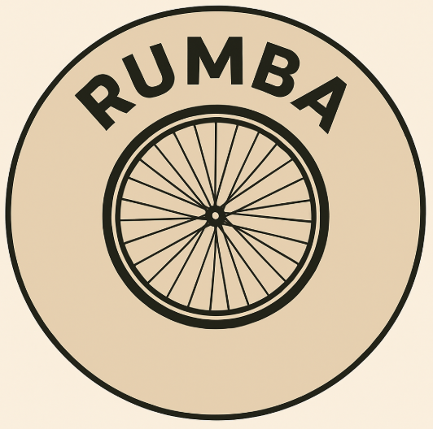
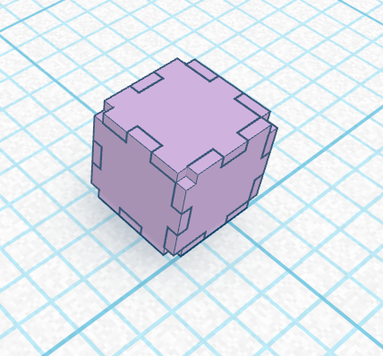

Kuba izveide bija garš process. Sākumā katrs par doto tēmu (mums tā bija "RUMBA" riteņu būvniecības un remonta uzņēmums) izveidoja logo aplikācijā "Inkscape".
Mana logo versija bija šāda:


Pēc tam grupā izlēmām, kuru logo izmantot uz kuba virsmas. Tad sākās darbs aplikācijā Tinckercad. Kad viss kubs bija izveidots, sākām to printēt. Izprintētā kuba malas atseviški noslīpējām un salikām kopā. Procesu var apskatīt apakšā redzamajā video.